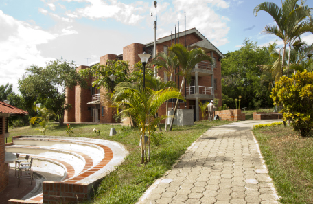
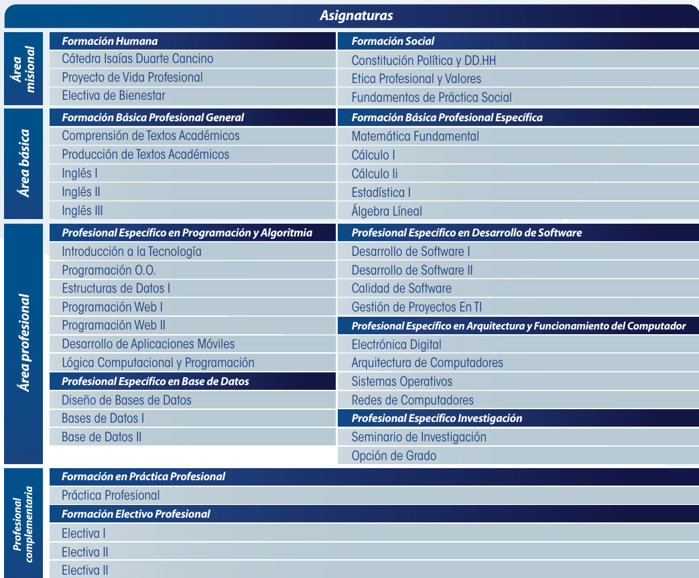

La Fundación Universitaria Católica Lumen Gentium (UNICATÓLICA) en Cali ofrece el programa de Tecnología en Desarrollo de Software, orientado a formar profesionales capaces de analizar, diseñar, implementar, probar y mantener sistemas informáticos en diversas organizaciones. Este programa tiene una duración de 6 semestres y se ofrece en modalidad presencial.
Plan de estudio de la unicatolica:

El valor de la carrera en la unicatolica es de $2.466.367
Este programa tiene una duración de 6 semestres y se ofrece en modalidad presencial.
El programa de Tecnología en Desarrollo de Software de la Fundación Universitaria Católica Lumen Gentium (UNICATÓLICA) cuenta con el Registro Calificado otorgado por el Ministerio de Educación Nacional (MEN) mediante la Resolución 8987 del 5 de junio de 2018, con vigencia de 7 años.
El Tecnólogo en Desarrollo de Software puede desempeñarse en sectores como el desarrollo de software, administración de sistemas, gestión de proyectos tecnológicos y soporte técnico, tanto en empresas tecnológicas como en cualquier organización que necesite soluciones digitales.
Beca de Honor: Dirigida a los estudiantes con los dos mejores promedios semestrales, con un mínimo de 3.5 y hasta 5.0. El porcentaje de la beca depende del promedio obtenido.
Beca de Reconocimiento a Grupos Representativos: Otorgada a estudiantes integrantes de selecciones deportivas o grupos culturales que hayan obtenido los tres primeros lugares en competiciones, muestras o festivales en el semestre anterior

